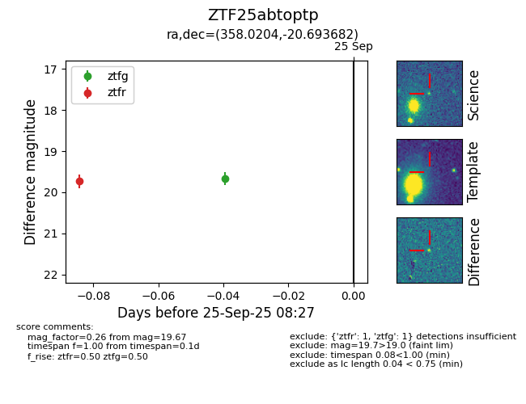

FINK: ZTF25abtoptp
Lasair: ZTF25abtoptp
ALeRCE: ZTF25abtoptp
ZTF25abtoptp (ztf,fink)
equatorial (ra, dec) = (358.0204,-20.69368)
galactic (l, b) = (55.1465,-75.00172)

last ztfg=19.67, ztfr=19.73
1 ztfg, 1 ztfr detections